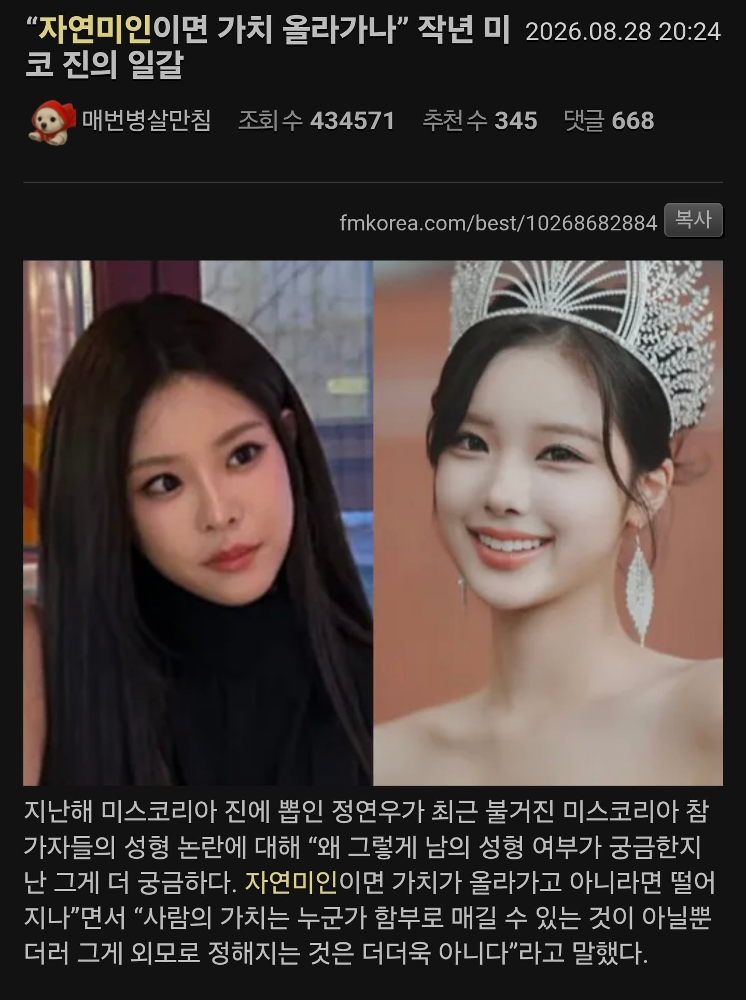
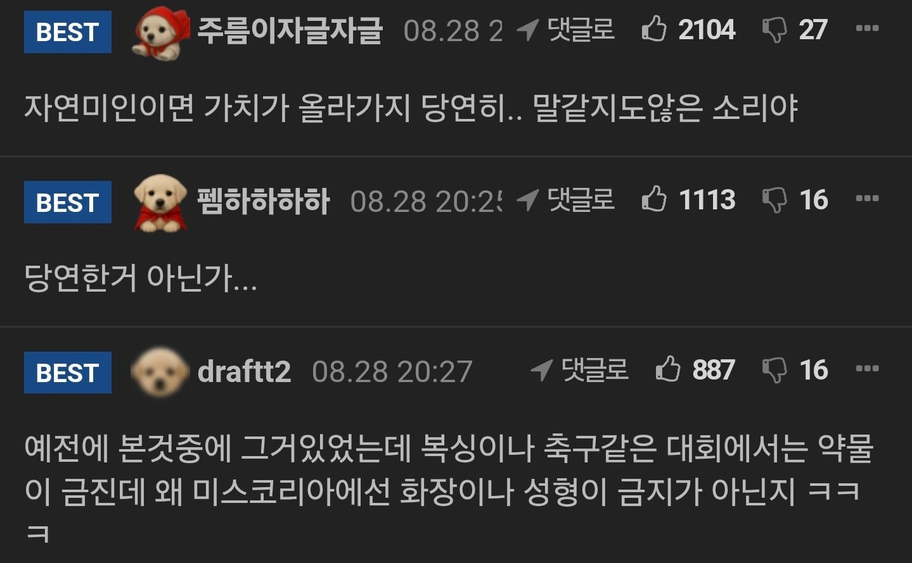
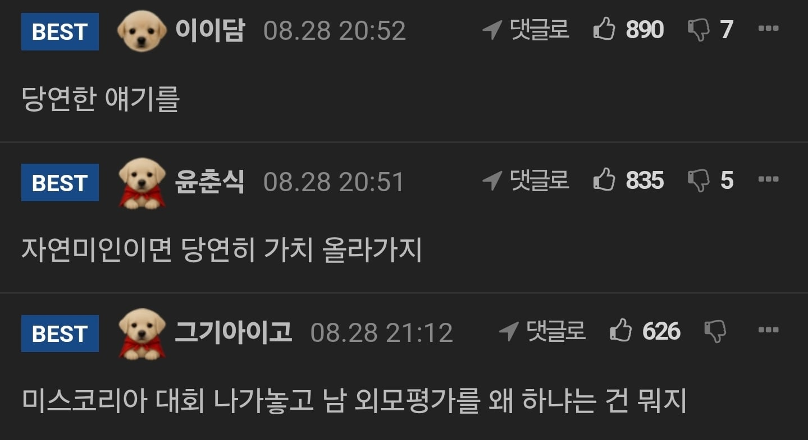

멘탈이 약하네.
본인들도 자연적으로 흠결 없는 다이아몬드랑 후처리로 흠결 제거한 다이아몬드를 같이 가치를 매겨준다면 ㅇㅈ
그건 실제로 가치가 같잖아
천연 다이아몬드랑 랩그로운 다이아몬드 차이 정도?ㅋㅋ
외모 평가하는 대회에 나가서 외모평가한다 뭐라하는게 맞는건가요
당연히 자연미인이 가치가 높지... 예쁜 형태 유전자 포함이니깐
성형미인은 예쁘겠지만 유전자 불포함이잖아
어짜피 다 하는 세상에선 똑같긴 하지 개붕이들이 로이드 꼽는다고 로니콜먼 안되고 성형해도 뷔 근처에도 못가는것처럼
성형은 순간이고 자연은 영원하니까. 유전자는 답을 알고있다.
오해할뻔했네 첫댓글에 달린 답글 보고와라
자수성가가 더 가치있지